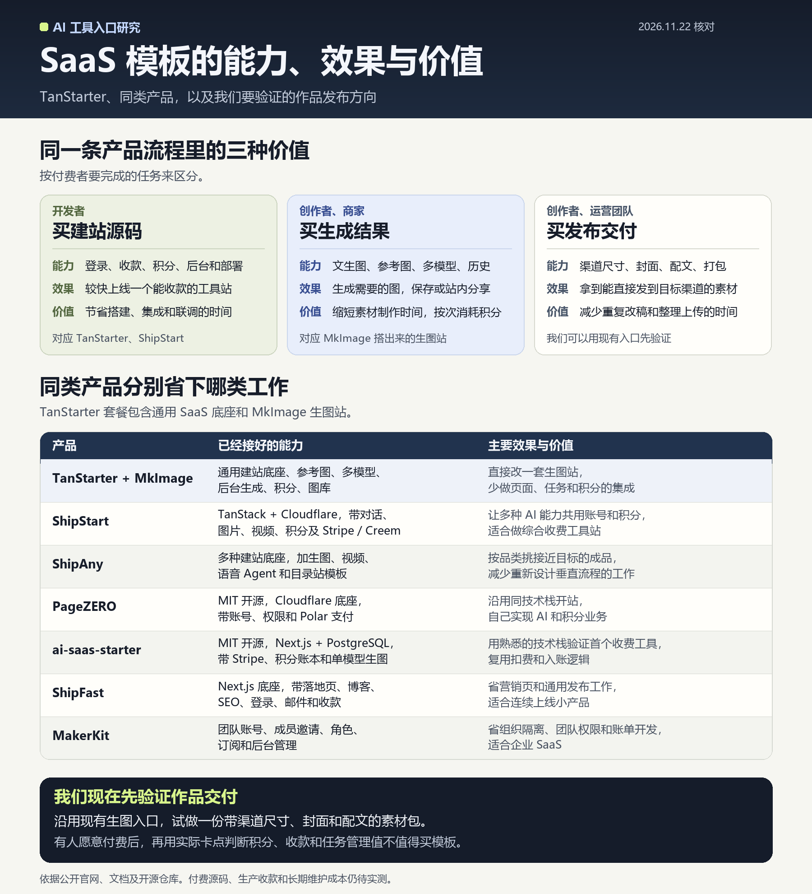

通用 SaaS 模板
TanStarter
适合从自己的工具流程开始做。复用账号、支付、站点页面和后台，按需要加生图、语音或其他工具。
源码选型 · 2026 年 11 月 22 日核对
它卖给开发者的是两套可修改、可自行部署的源码。TanStarter 接好了账号、支付和运营后台，MkImage 用同一底座实现了积分生图站。价值在于少做一遍这些集成。

查看完整引导图能力对照
通用模板提供建站模块。MkImage 沿用这些模块，已经接上生图任务、积分和作品页。
| 环节 | TanStarter 通用模板 | MkImage 生图模板 |
|---|---|---|
| 账号和入口 | 邮箱、Google 登录，找回密码，用户与管理员角色。 | 生图工具入口、套餐页、历史与收藏页，沿用通用账号体系。 |
| 付费和积分 | Stripe、Creem、Waffo 支付，支持订阅和一次性购买。 | 积分包、余额、生成扣点和失败退点。公开站用 Stripe 收款。 |
| 模型与交互 | 对话、摘要、翻译、文字转语音、生图等示例。按自己的工具需求组织完整产品。 | 文生图、上传参考图、模型及尺寸选择。公开站按模型和规格扣点。 |
| 任务与作品 | R2 文件存储。任务状态、交付和历史按业务实现。 | 后台生成任务、作品历史、收藏、公开作品和可导入的提示词图库。 |
| 运营与部署 | 营销页、博客、多语言 SEO、用户管理、邮件、Cloudflare 部署。 | 沿用底座。还要配自己的模型密钥、存储、积分价格及支付账号。 |
MkImage 接好的用户流程注册登录 → 买积分 → 选模型或上传参考图 → 后台生成并扣积分 → 取回作品。生成失败时退回积分。
自己上线时，用自己的模型账号、Cloudflare 和支付商户。模型调用、托管和支付手续费分别由服务商计费。MkImage 配置Cloudflare 计费
能力依据 TanStarter 功能页、MkImage 模板页、公开站模型规格及 公开站更新记录。
免费版对照
以一个能真实收款的首版来算，范围是单模型文生图、一档积分包、Stripe 卡支付、生成历史和下载。
预计少做 6–10 小时
按一名熟悉两套栈的开发者、Stripe 商户已开通估算。包含部署联调，商户审核等待另计。
已有一次性积分包、Stripe 结账、积分账本、防重复入账、同步生图和异常退积分。
查看免费仓库收款确认、到账反馈、超时补退和下载入口。首版只卖积分时，还要收起默认订阅及对应配置。
查看充值回调如果同时要参考图、多模型按规格扣点、后台任务和公开图库，估计免费版多花 2–4 个工作日。
查看 MkImage 已有功能上线工时来自本次方案估算。免费版核对了公开源码，MkImage 核对了文档与公开演示。私有源码、正式部署和真实收款仍待实测。
工程成本
如果你已有顺手的脚手架，就看它能省下多少集成、联调和交付工作。改动大量模板代码时，也要计入适配和后续合并的时间。
| 工程环节 | 模板提供的实现 | 什么情况下有价值 |
|---|---|---|
| 支付联调 | TanStarter 文档列出了 Stripe、Creem、Waffo 的沙箱端到端测试。测试会走托管结账、接收真实测试回调，并验证本地 D1 记录。测试范围 | 需要新接 Creem 或 Waffo 时，现成流程更有价值。已有稳定的 Stripe 路径，可以保留现有实现。Creem 的退款和争议仍要人工处理或补代码。Creem 文档 |
| 快速开站 | CLI 能建立 GitHub 仓库、创建 D1 / R2 / KV、配置变量并部署 Workers。它只自动配置 Waffo 沙箱，Stripe 和 Creem 需要手动设置。CLI 文档 | 打算在 Cloudflare 上连续做几个新项目时，可以重复使用。现有项目用 Next.js 和 PostgreSQL，就把切栈与迁移成本也算进去。 |
| 给工具提供 API | 现成的 API Key 创建、撤销和校验。独立的 MkExt 可作为浏览器侧栏或弹窗，共用 TanStarter 账号。API Key扩展接入 | 如果我们的入口要扩展到浏览器插件或允许用户从别处调用，这两块有复用空间。具体业务 API、用量规则和工具交互仍要实现。 |
| 升级与回归 | 文档提供本地生产构建检查，也说明如何从上游合并模板更新。更新文档 | 保留较多模板模块时更容易吸收修复。自行改动越多，合并冲突、数据库迁移和回归测试的成本也越高。 |
如果首版只做单模型、Stripe 和积分包，我会先用免费版。它已经有积分账本、并发扣费和重复回调测试。按每小时 25 美元举例，模板只要比你的现有路线净省约 4 小时就能抵购买价。首发需要 MkImage 的完整生图工作流，或准备重复使用 Cloudflare 开站与多支付配置时，再考虑买。免费版测试
付费版的工程能力依据公开文档。私有源码的可维护性和自定义后的回归工作量仍待实测。
源码模板市场
这类产品把账户、收费、部署和任务流程一起交付。对开发者，价值是沿用现成代码后，从开始搭建到第一次真实收款能净省多少工作。
| 产品 | 已经接好的工作 | 最有价值的场景 |
|---|---|---|
| TanStarter + MkImage | TanStack Start + Cloudflare 通用底座，以及带积分包、后台生成、参考图、图库和作品历史的生图站。模板 | 要做生图站，尤其想要提示词图库、收藏、公开作品和现成生图页面。官网黑五价 $99。官网报价 |
| ShipStart | 同样是 TanStack Start + Cloudflare。带对话、图片和视频生成，以及 Stripe / Creem、订阅、一次性积分包和任务记录。生成文档积分文档 | 首发想接多种 AI 模态，或者做一个按积分收费的综合工具站。官网首发价 $69。官网报价 |
| ShipAny | 有 Next.js、TanStack 等底座，也有生图、生视频、语音 Agent、目录站等垂直模板。底座复用账号、支付和积分。模板目录 | 想按品类挑接近成品的网站，或打算做多种垂直站。会员资格与具体模板价格要一起看。会员与模板价格 |
| PageZERO | MIT 开源的 TanStack Start + Cloudflare 底座，有账号、D1、邮件、权限和 Polar 付费。开源仓库功能 | 想保留同一技术栈、接受 Polar，然后自己实现 AI 和积分流程。 |
| ai-saas-starter | MIT 开源的 Next.js + PostgreSQL 生图底座，已有 Stripe、一次性积分包、账本、防重复入账和单模型生图。开源仓库 | 先验证单模型收费工具，或现有项目已经围绕 Next.js 和 PostgreSQL 开发。 |
| ShipFast | Next.js 通用模板，内置登录、支付、邮件、落地页、博客和 SEO。功能与报价 | 独立开发者想快速发布一个带营销页和支付的产品，业务流程由自己实现。 |
| MakerKit | 以 Next.js + Supabase 版为例，预建个人和团队账号、成员邀请、角色、订阅和管理后台。技术文档 | 给企业团队做 SaaS，需要多个组织独立管理成员、权限和账单。 |
对照依据各产品公开文档、官网和开源仓库，价格是 2026 年 11 月 22 日官网显示的报价。各付费仓库、生产收款和长期维护成本仍待实测。
产品判断
这里把「我们的入口」理解为我们自己的首页或工具页。按现有入口的完成度，选择要复用的部分。
如果交付就是「买积分、用一个模型生图、下载」，免费版的核心流程够用。优先把到账、失败退点和下载跑通，再看付费和复用情况。
如果参考图、多个模型、后台生成和作品历史都是首发需求，MkImage 的现成流程能省开发。上线前用自己的模型、商户和长任务走一遍真实测试。
已有账号、支付和积分时，主要看生图工作流是否值得借鉴。已有用户入口、还缺收款和任务交付时，可以保留交互，评估把入口接到模板后台的工作量。
假设案例
面向已经有商品原图的卖家。把普通生图收敛成「保留商品外观，一次交付多个渠道的广告素材」。
对我们的发布方向，先用现有入口交付一份能直接使用的素材包，观察用户愿不愿意付费、之后会不会回来用。等积分、收款或任务管理成为实际卡点，再看模板能省下多少活。
能力、效果与价值
三类产品各自解决什么问题，七款源码模板能省哪些工作，以及我们可以先验证哪一步。